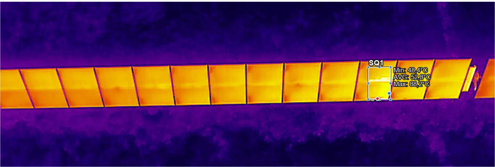
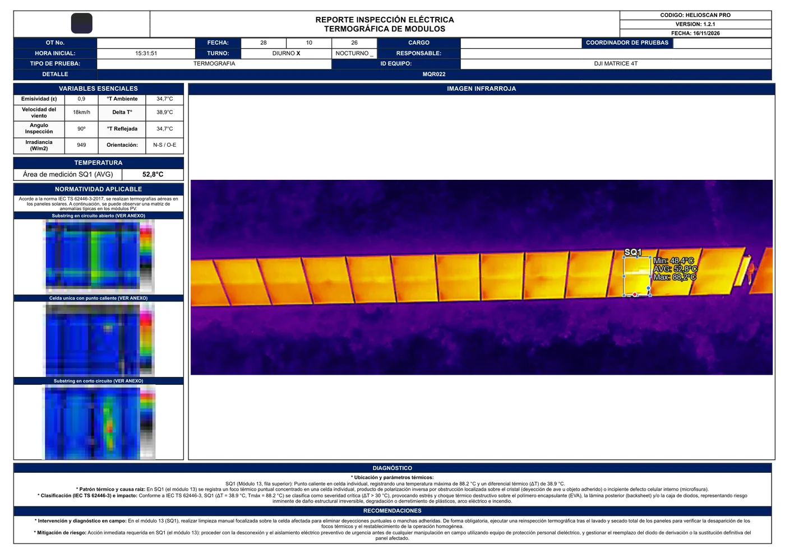
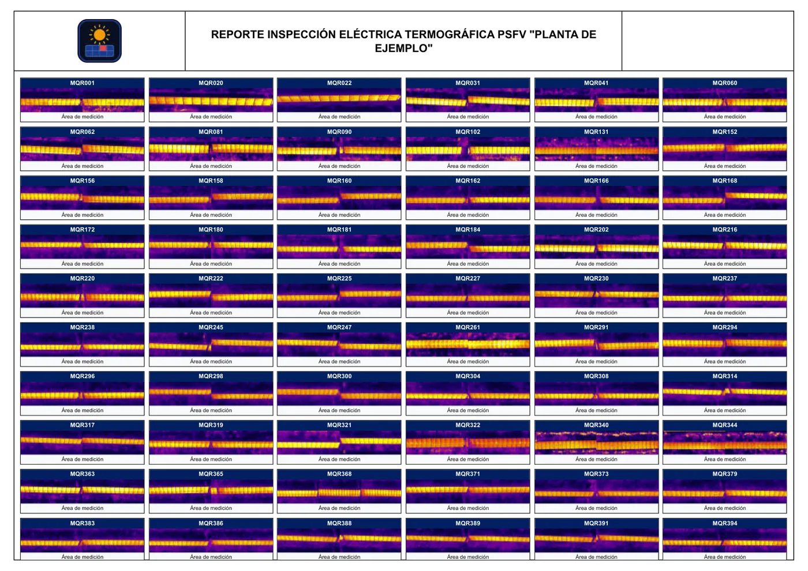

Resumen ejecutivo
Consolidado de anomalías por tipo y por criticidad para la gerencia y el cliente final.
Termografía de plantas fotovoltaicas · IEC TS 62446-3
HELIOSCAN PRO es un programa para Windows que toma las fotos radiométricas del dron DJI, las cruza con el plano de la planta y genera el informe PDF con el ΔT y la clasificación de cada anomalía. Sin revisar foto por foto ni armar el documento a mano.

Después de volar una planta de varios megavatios quedan cientos o miles de fotos térmicas. Alguien tiene que abrirlas una por una, marcar los puntos calientes, averiguar en qué mesa está cada uno y armar el documento para el cliente. Es trabajo repetitivo, cada inspector lo hace distinto y es fácil que una falla quede mal ubicada.
Cómo funciona
Imágenes térmicas radiométricas DJI (R-JPEG) y visuales del mismo vuelo, desde una carpeta o un archivo .zip.
KMZ, KML, GeoJSON, DXF, DWG o Shapefile. Cada foto queda asociada a su mesa o subcampo, respetando los nombres de su plano.
Lectura de la temperatura real de cada píxel, marcación de puntos calientes (SQ1, SQ2…) con su ΔT y diagnóstico según IEC TS 62446-3.
Editor en vivo de textos, recuadros y fotos. Informe PDF apaisado listo para el cliente final, con su logo, y mapa de anomalías sobre el plano.
El informe

Más allá del PDF
Consolidado de anomalías por tipo y por criticidad para la gerencia y el cliente final.
Cada anomalía pasa de pendiente a reparada y a verificada. El historial queda guardado por cliente y por planta.
Compare una inspección con la anterior: qué se reparó, qué sigue y qué apareció nuevo.
Cálculo de la energía que se pierde por las fallas detectadas, con supuestos que usted puede ajustar.
Excel y CSV para sus sistemas, y KMZ para ver las anomalías en Google Earth.
Clientes, plantas, planos y vuelos organizados en la misma aplicación. Actualizaciones automáticas firmadas digitalmente.

HELIOSCAN PRO procesa todo en el computador donde está instalado. Las fotos del dron y los planos de sus clientes no se suben a ningún servidor. El programa funciona sin internet; la conexión solo se usa para actualizaciones y para la redacción asistida, que es opcional.
Requisitos: Windows 10 u 11 de 64 bits y un dron DJI con cámara térmica radiométrica.
Planes
Sin costo
Uso completo durante 15 días en un equipo. Procesamos juntos un vuelo real de una de sus plantas y compara el resultado con su informe actual.
Pedir pilotoPor equipo
Para equipos con inspecciones todo el año. Incluye actualizaciones y soporte durante la vigencia.
Pedir cotizaciónPago único
Licencia sin vencimiento con 12 meses de actualizaciones y soporte. Renovación de soporte opcional.
Pedir cotizaciónDesde 3 equipos
Para empresas con varios inspectores. Desde 5 equipos, valor a convenir.
Pedir cotizaciónPreguntas frecuentes
Drones DJI con cámara térmica radiométrica que guarden las fotos en formato R-JPEG. Si usa otra cámara, escríbanos y lo revisamos con fotos de muestra.
Para ubicar cada falla en su mesa, sí: sirve un KMZ, KML, GeoJSON, DXF, DWG o Shapefile con las mesas o subcampos. El programa respeta los nombres de mesa de su plano.
No. Todo se procesa en su computador. Las fotos y los planos no salen del equipo.
Sí. El editor permite mover o agregar recuadros, cambiar textos, diagnósticos y fotos, y ver el resultado en vivo antes de exportar el PDF.
Una licencia completa por 15 días en un equipo, acompañamiento en la instalación y en el primer informe, y una reunión para revisar los resultados con su equipo.
El producto es el programa, para que su equipo genere sus propios informes. Si necesita que procesemos un vuelo puntual, escríbanos y lo conversamos.
Contacto
En 30 minutos le mostramos el programa procesando un vuelo real. Si tiene a mano un vuelo térmico reciente y el plano de la planta, lo procesamos en vivo.
Isaac Esteban · Fundador